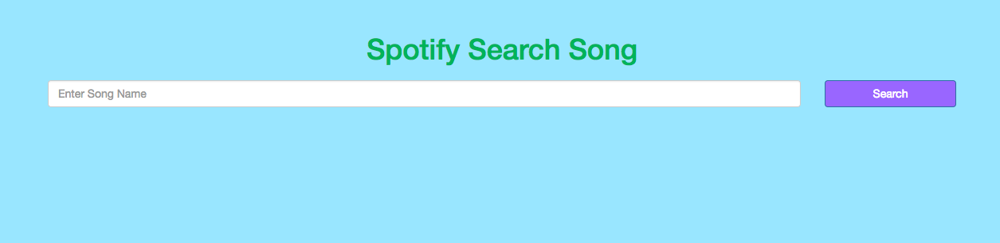

My Projects
Front-End Web Development Projects:
10 week immersive course where I was introduced to the basics of front-end web development. We covered building websites, like this one, using HTML, CSS, adding interactivity through JavaScript and programmatic thinking. This was a course for students with little to no programming background.*
This was the first code I ever wrote. It uses very basic HTML and CSS. When you go into the project, you will see that the bullet points are not alligned with the rest of the project. As it was my first project, I had not yet learned how to format bullet points. The colors are also all over the place because I was just learning about hex colors and I wanted to use them all. As you go through my projects, you will see that my use of color makes much more sense now.

This was the second project that I did. I was given a picture of what it was supposed to look like in the end. The first part of the assignment was the about me page. Then I had to connect and make the resume page. I struggled with the fonts and formatting of the resume page. I thought it was going to be easy because I had a lot of the formatting done from the about me page, but really all I had was the colors, the border and the Betty White picture.

Here is another one that I created from scratch. I had a photo of what is was supposed to look like and I had to get it as close as possible to it. I struggled with making the navigation bar because we hadn't learned bootstrap yet, so I had to make it all on my own. It was also very hard to format the navigation bar. This one was a lot of fun because I wasn't given anything except the picture. I had to write everything in.

I created this tic tac toe board from scratch using HTML, CSS and JavaScript. It was the first project that I had to do using JavaScript. Making the board was easy since it was just using HTML and CSS. Getting the game to work was pretty complicated. It took me doing multiple JavaScript projects before I finally figured it out. You can play against yourself, or with another person. Unfortunately, the computer cannot play you yet.
This was a more complicated lab using JavaScript. All of the HTML and CSS were already there for me. I just had to make it interactive. It can add points, and set a custom score. However, when you set the custom score it goes back to that number instead of adding onto the points you already have.

When this project was assigned, all of the HTML and CSS were also already written for me. All I had to do was add JavaScript. This was a complicated lab because I had to make it add and remove JavaScript that I had written at the same time. If you click into the link, the navigation bar is all custom JavaScript.

This project is really cool. When you search for a movie, JavaScript pulls information from IMBD's api. This was a new concept for me, and I didn't understand it at all when it was first explained to me. After putting the function into JavaScript and seeing exactly how it works, I now understand it. I guess thats the point of actually doing the labs.

This is the last project that I did in my Front-End Web Development class (sheds a tear). Like the Movie Search project, this project pulls from Spotify's api using JavaScript to show your search results.
User Experience Design Project:
10 week immersive course where I learned a wide range of user experience methods and concepts. I learned how to understand my target audience, meet a need they are facing and document it with deliverables such as sitemps, wireframes and prototypes. I now can also apply a goal-oriented process to guide my design decisions, help me communicate with teammates and stakeholders more effectively and validate my results. Lastly, I created a case study designed to showcase my process by walking people through what I did, why I did it and what my decisions were based upon.*
Product Management Project:
10 week immersive course where I explored the different processes and skills required to guide product development from ideation through execution and iteration in an Agile development environment. I am now able to do customer and market research to define a Minimum Viable Product (MVP) to validate my project's hypothesis and assumptions. I am confident that I would be able to lead an engineering team with a metric-driven product roadmap.*
Digital Marketing Project:
10 week immersive course where I learned to use the most relevant tools, frameworks and best practices to promote a brand, drive sales leads and increase customer engagement. I am now able to be proficient in social advertising and use Google Analytics, Google AdWords and Excel to find meaning in user behavior. I can also develop and plan a campaign driven by data and paid search strategies, measured by key performance indicators (KPIs).*